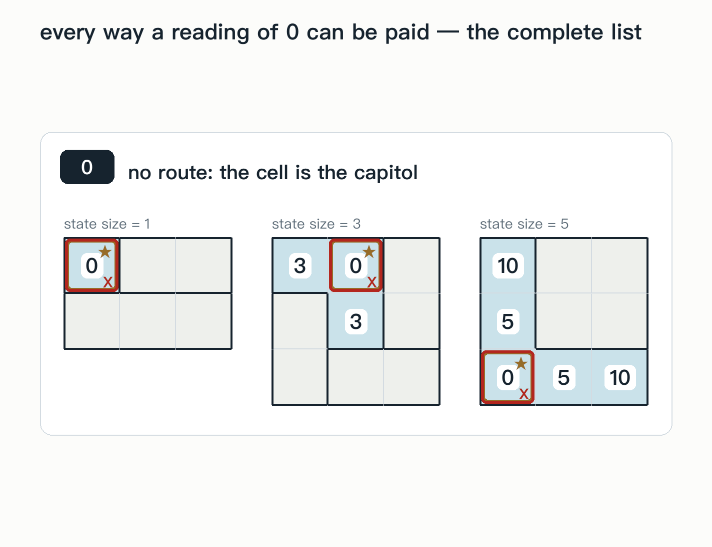
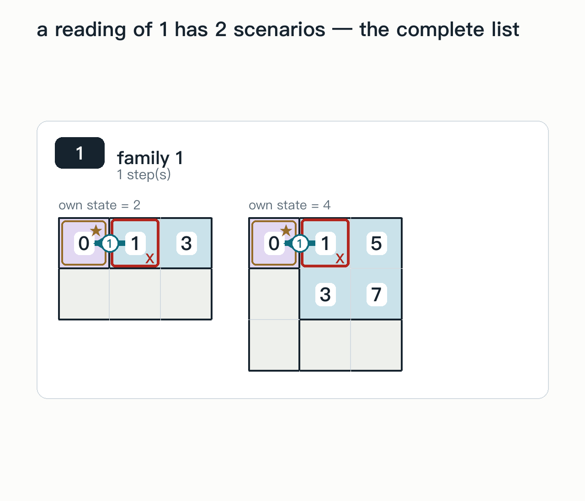
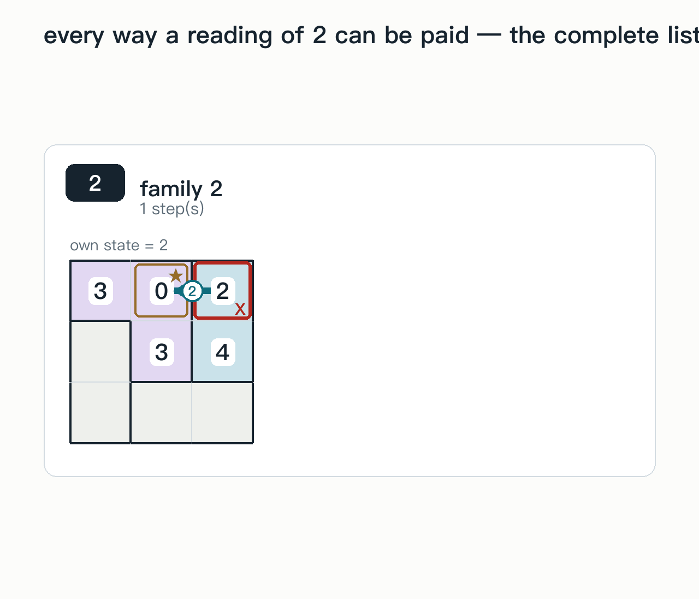
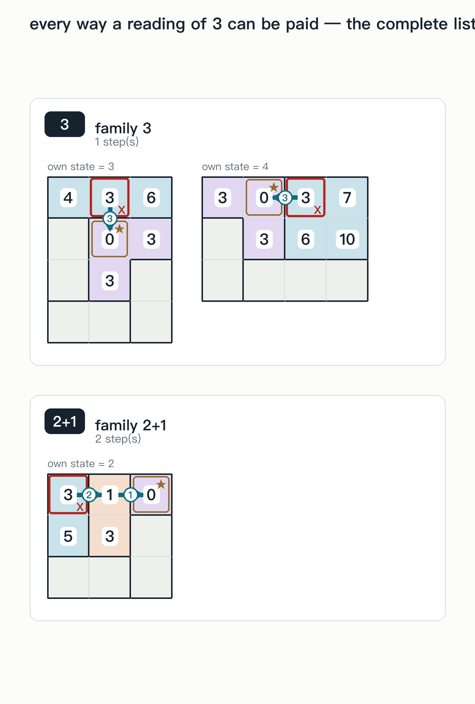
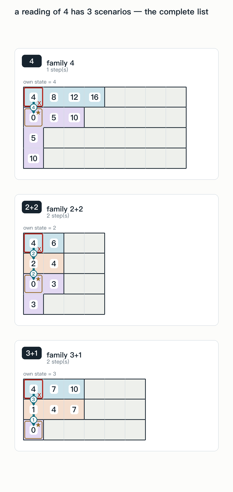
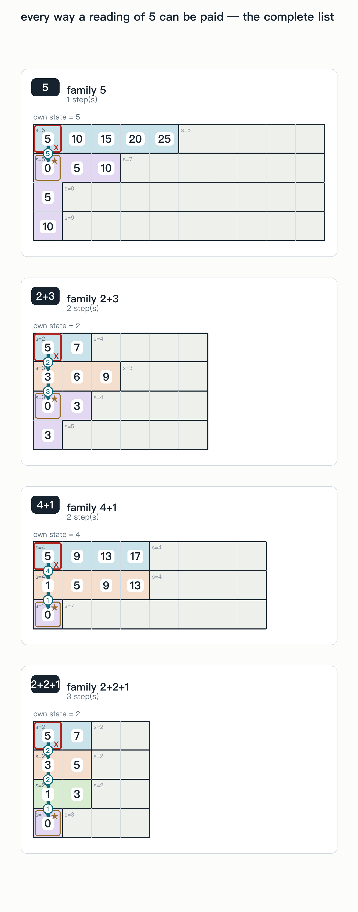
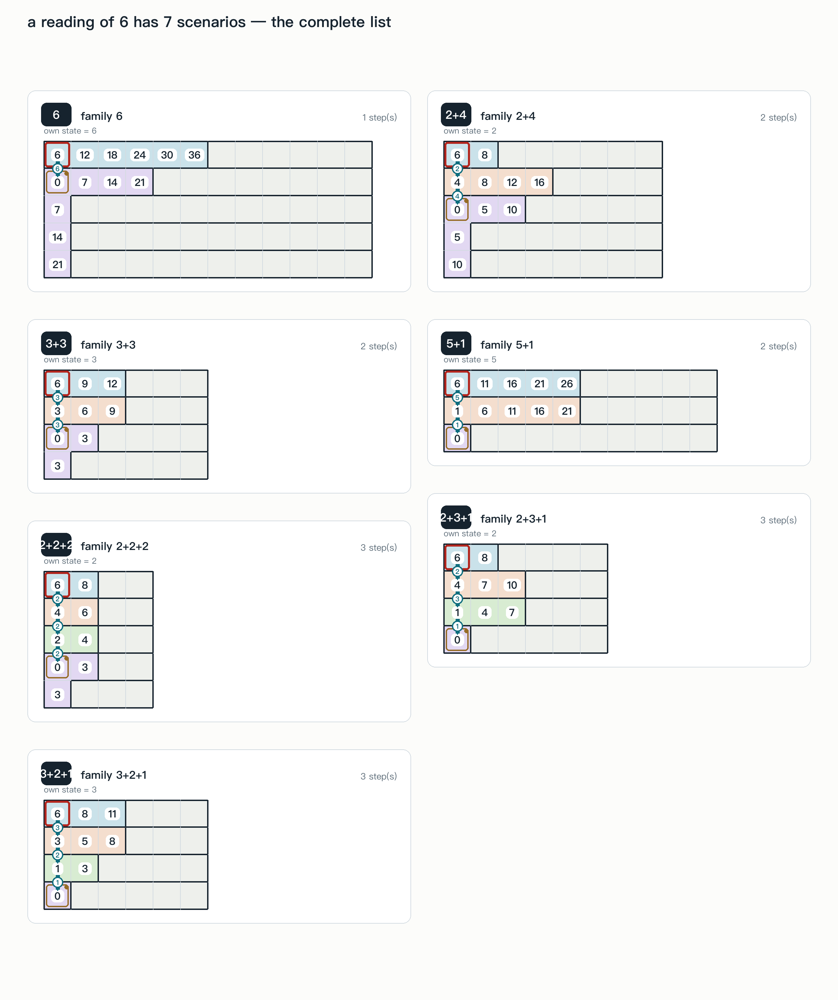
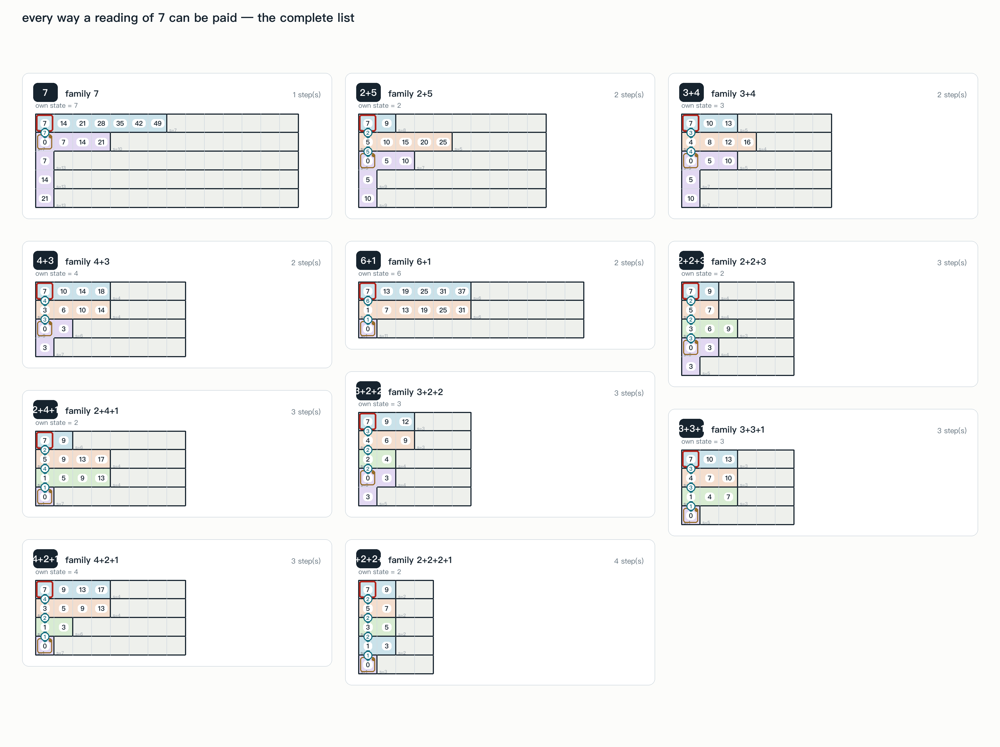
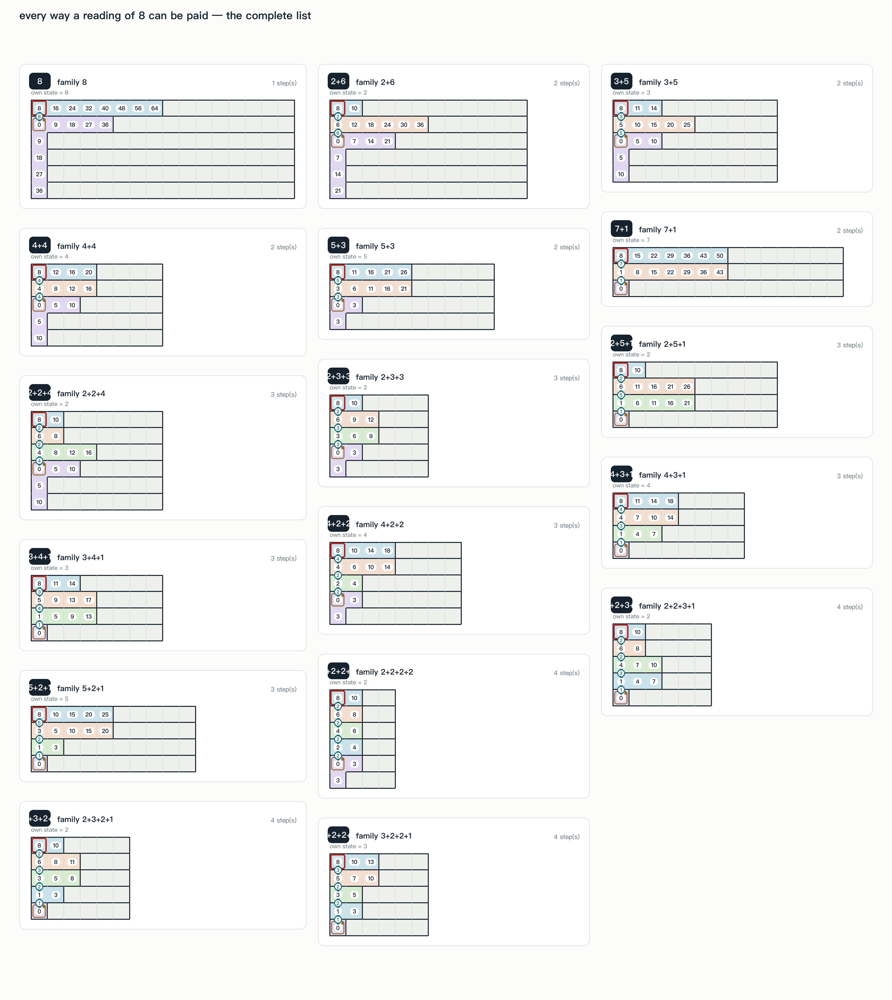

A number in a square is a cost: the least total cost of any walk from that square to a capitol. For every reading from 0 to 8, what follows is the complete list — every way such a number can be paid, each one drawn on a board the rule engine checked, and what it forces on the square that carries it. There is no “and so on”: if a square reads 5, the four ways below are all of them.
Red ring: the square that reads k · gold: a capitol (it reads 0) · teal: the cheapest route to a capitol, with the cost of each step on it · grey: a filler state, which has no capitol and no reading of its own.

The square IS a capitol, and its state's size is odd (1, 3, 5, …) — the lower bound is 1, not 3.
the only case

The square touches a 1×1 state and is not a capitol itself. An equivalence, not just an implication.
all the ways it can be paid: 1

The square is in a 2-cell state, next to a capitol of odd size ≥ 3. This is the only reading that pins the square's own state.
all the ways it can be paid: 2

Two families: one step of cost 3, or 2+1 into a 1×1. The own state is not pinned, so "reading 3 ⇒ a 3-cell state" is false.
all the ways it can be paid: 2+1 · 3

Three families: 4, 3+1, 2+2. Only the one-step family pins the own state, at 4.
all the ways it can be paid: 2+2 · 3+1 · 4

Four families: 5, 4+1, 2+3, 2+2+1. The own state is not pinned.
all the ways it can be paid: 2+2+1 · 2+3 · 4+1 · 5

Seven families. The own state is not pinned.
all the ways it can be paid: 2+2+2 · 2+3+1 · 2+4 · 3+2+1 · 3+3 · 5+1 · 6

Eleven families. The own state is not pinned.
all the ways it can be paid: 2+2+2+1 · 2+2+3 · 2+4+1 · 2+5 · 3+2+2 · 3+3+1 · 3+4 · 4+2+1 · 4+3 · 6+1 · 7

Seventeen families. The own state is not pinned.
all the ways it can be paid: 2+2+2+2 · 2+2+3+1 · 2+2+4 · 2+3+2+1 · 2+3+3 · 2+5+1 · 2+6 · 3+2+2+1 · 3+4+1 · 3+5 · 4+2+2 · 4+3+1 · 4+4 · 5+2+1 · 5+3 · 7+1 · 8